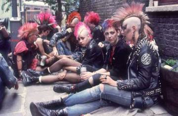
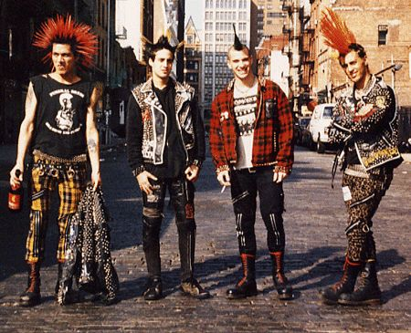
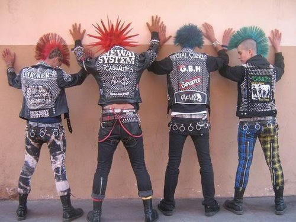
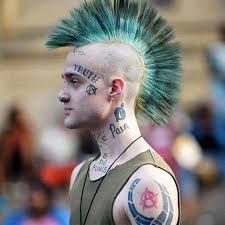
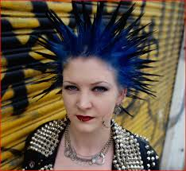
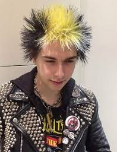
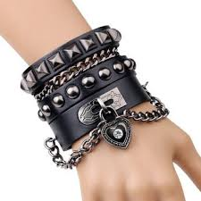
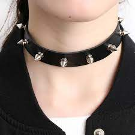
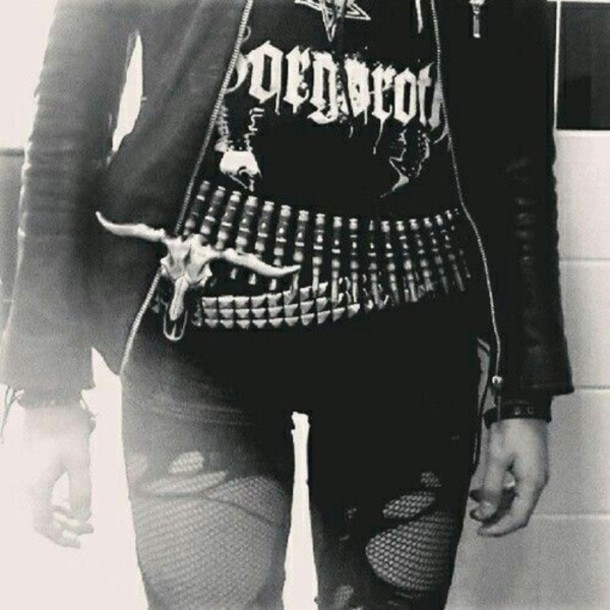

Punk mode för Dummies
Klader
Punk modet är välidgt brett med många olika inriktningar och stilar. Punkideologin är att man är emot konsumtionen därför var mycket av kläderna egengjorda eller köpta secondhand som man sedan gjorde om till sitt egna unika plagg. Det ska vara hål i byxorna gjorda på olika sätt. Några förslag är sandpapper, sax eller bara att slita. Det kan vara vilken tröja som helst, en vanlig plain eller med band tryck. Sen en skinnjacka ju slitnare och med mycket nitar desto bättre. Även jackan får inte vara ny köpt. Det ska vara mycket nitar, säkerhetsnålar, patroner och så viadre. Man kan även spreja på sitt favorit band på jackan, byxorna eller tröjan. Det viktigaste är att det ska sticka ut, se slitet ut och inte vara nytt. Du vill ju inte bidra till konsumtionen. När det kommer till skor ska det vara kängor även här slitna. De flesta kängor har också stålhätta så att du kan sparka riktigt hårt när du dansar mosh.
  Frisyrer
När det kommer till frisyrer finns det inga regler för hur det ska se ut. Det enda som gäller är att det ska vara något anmärkningsvärt, ju vildare och oväntade färger ju bättre. En "typisk" punkfrisyr är något som är annorlunda som inte är mainstream utan något som bryter det "normala". Man kan färga håret i gälla färger. Använda sig av hårgele för att forma håret till spikar. Men man kan också göra en mohawk eller tuppkam. Då rakar man håret på sidorna och använder sig av hårgele och hårspray och ställer håret som är kvar rakt upp. Men det ska sägas att den frisyren är mycket att ta hand om, det gäller att man rakar sidorna ofta så att dem inte blir för långa.
  Här vid sidan ser vi tre olika frisyrer. Den första är den klassiska mohawken/ tuppkammen. Bild två visar spikarna man kan forma håret till. Den sista bilden har man bara sprett håret åt alla håll. En punkfrisyr kan se ut hur som helst meningen med de är bara att den inte ska vara som normen.
Accessoarer
Precis som kläder och frisyrer spelar accessoarer en stor roll i din punkklädstil. När det kommer till smycken är det mycket halsband och armband. Något som är ett vanligt smycke är en nit choker med vilken storlek på niten som man tycker är snyggast. Självklart är ju större nit desto bättre. Samma gäller för armband. Men det är också vanligt att ha kjedjor hängande överallt; runt halsen, armarna hängande på benen och så vidare. Nit skärp är också vanligt att man använder. Man har nitar på allt. Men man kan också använda sig av patroner; i både bälte, halsband och armband. Det viktigaste när det kommer till accessoarerna är att det ska gå emot normen.
  På den första bilden ser vi någora olika armband man kan ha. Sen har vi på den andra bilden det typiska nit chokern. Till sist på tredje bilden är det ett skärp gjort av partoner. Bara kom ihåg att ha det som du känner dig bekväm med och som ska chocka och gå mot normen.